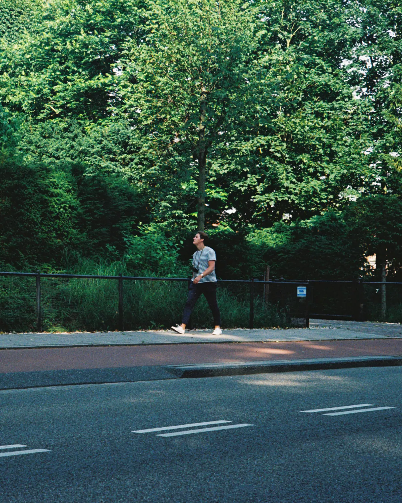

Freek Wennekers, vastgoedfotograaf
Haarlem
Vastgoedfotografie voor makelaars in Haarlem & omstreken.
Diensten
Alles in één afspraak, met 3 werkdagen opgeleverd.
- 01
Fotografie
Interieur, exterieur en details, klaar voor Funda.
- 02
Video
Een rustige rondgang, liggend en staand.
- 03
360°-tour
Kopers lopen zelf door de woning.
- 04
NEN 2580 inmeten
Meetrapport met 2D- en 3D-plattegronden.
- 05
Nabewerking
Belichting, kleur en rechte lijnen in eigen hand.
Werk
Zes woningen, van grachtenpand tot villa.
Over

Ik ben Freek Wennekers, vastgoedfotograaf in Haarlem en omstreken. Ik werk voor makelaars, ontwikkelaars en particuliere verkopers en heb ruim 2.400 woningen gefotografeerd.
Ik neem de tijd voor licht en opstelling, en bewerk al het materiaal zelf. Zo krijgt elke woning dezelfde zorg en dezelfde stijl, van de eerste foto tot de plattegrond.
Contact
Vragen?
Bel of mail gerust, ook als je nog aan het oriënteren bent. Stuur het adres van de woning en wat je nodig hebt mee, dan maak ik een vrijblijvende offerte op maat.